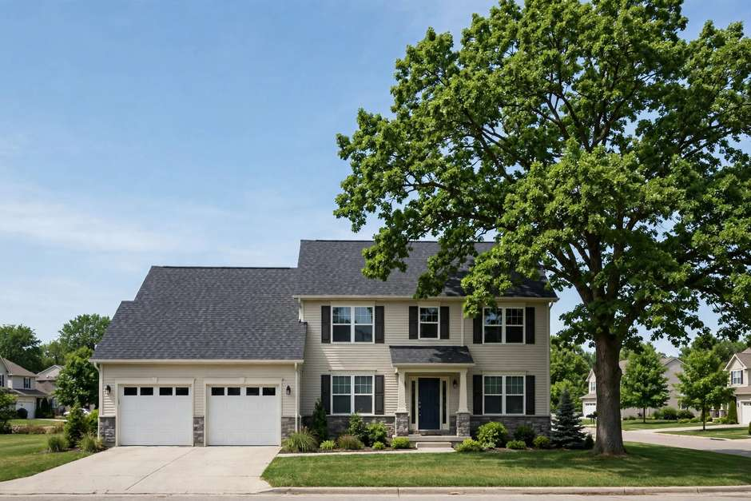

How to choose the right roofing material for your Des Plaines home
Asphalt, metal, wood shake, slate, and tile behave differently in Des Plaines winters. This guide compares them on climate fit, pitch, weight, and attributed guide lifespans.

Choosing a roofing material is a decision about climate, pitch, structure, and budget together — and the guides disagree about cost, so this one shows the disagreements rather than hiding them. Every price and lifespan figure below is an attributed third-party guide figure. None of it is this business’s price, and no lifespan figure is a warranty.
The service pages on this site cover metal roofing and wood shake roofing, among other topics. Tile and slate are discussed here as materials in general terms only — call to confirm which materials a particular business works with before assuming any of them is offered.
What Des Plaines weather actually does to a roof
At Chicago O’Hare, the nearest official station, the 1991–2020 normals show 38.4 inches of snowfall a year, 37.86 inches of precipitation, about 121 nights at or below freezing, and about 43 days that stay below freezing all day. That combination — heavy freeze–thaw cycling — works on every joint, seal, and fastener in a roof.
Severe weather runs broadly April through September, peaking in June and July, in National Weather Service Chicago forecast-area climatology (23 counties, not Des Plaines alone). Hail and wind are the severe-weather concerns for roofing: hail bruises asphalt and dents metal, and wind lifts shingles and ridge caps. The NWS severe-thunderstorm hail threshold is 1 inch.
Ice dams are the winter mechanism: attic heat melts snow on the upper roof, the melt refreezes at the cold eave, and water backs up under the covering. Material choice alone does not prevent ice dams — attic air sealing, insulation, and ventilation are part of the same system, and ice-barrier underlayment is required in Des Plaines (Table R301.2(1): Yes).
The five roofing material options discussed in guides
Guides discuss five material families for Des Plaines-area homes. Each is described below in general terms, with its trade-offs stated plainly:
Architectural asphalt shingles
The common default in guides: widely installed, available in 3-tab and architectural (dimensional) profiles, and the material most cost guides are built around. Guide lifespans attributed only: 3-tab 12–20 years, architectural 20–30 years (XL 2026 guide). Asphalt is vulnerable to hail bruising and granule loss, and to heat and UV aging over time.
Standing seam metal
Concealed-fastener standing seam panels shed snow well and handle hail differently from asphalt — denting rather than bruising — but installation is specialist work, and exposed-fastener panels are a different product with different thermal-movement and maintenance behavior. Guide lifespans: 40–70 years in most guides, 30–50+ years in the Holda guide. See the metal roofing page for more.
Clay and concrete tile
Heavy, long-lived in guides, and uncommon as a Des Plaines residential choice in the sources read. Weight is the deciding question: tile needs a structure that can carry it, and that is a structural question, not a roofing preference. No Des Plaines tile-stock evidence was found in the research behind this guide, and no tile service page exists on this site.
Natural slate
The longest guide lifespans (75–100+ years, XL guide) and the highest guide costs, with very wide ranges. One guide describes natural slate as rare in Illinois outside historic homes in Oak Park, Evanston, or older city neighborhoods; no Des Plaines slate-stock evidence was found. Slate is also heavy, and existing slate must be removed rather than overlaid. No slate service page exists on this site.
Wood shake and synthetic shake
Cedar shake is a traditional look with a high-maintenance reality in Illinois humidity and wet springs: moss, rot treatment, and shorter guide lifespans than metal or slate (25–35 years XL; 30–40 years GM/Holda; 30–50 years Green Attic blog — the guides conflict). Des Plaines guidance requires existing wood-shake coverings to be removed, not overlaid. See the wood shake roofing page. Composite or synthetic shake is a separate product family; brand terms apply only where a business confirms it carries them.
Roofing material cost: what the guides publish
Guide per-square-foot installed figures conflict, including within the same company’s pages. They are shown here as published, with sources and dates, and none is this business’s price:
- Asphalt 3-tab: $4.00–$5.50 (XL 2026); $3–$11 all asphalt (Angi Chicago, July 2026); $5–$8 (Chicago Roofing Team, undated).
- Architectural asphalt: $5.00–$7.50 (XL); $5–$11 (Modernize, August 2026); $4–$6 (Holda, northwest suburbs, 2026); $8–$12 (Chicago Roofing Team — conflicts, do not reconcile).
- Metal: $9–$18 per sq ft (Modernize, Illinois, August 2026); standing seam $11.00–$17.50 (XL); residential metal $12–$20 (Green Attic, January 2026); ~$5–$16 (Holda).
- Cedar/wood shake: $9.00–$15.50 (XL); $9–$16 (Modernize); Green Attic $15.00–$22.00 on one page vs $6–$9 on another — the same company, different pages; neither is used without noting the conflict.
- Natural slate: $20.00–$36.00 (XL); $15–$30+ (Modernize). Angi Chicago slate installation averages $50,250 with a $5,000–$95,500 range (October 2026, survey-based, extremely wide).
Per-square-foot figures are not interchangeable with per-square or total figures, and guides variously include or exclude tear-off, disposal, underlayment, flashing, ventilation, permits, and decking. One roofing square is 100 sq ft of roof surface, not living area. Only a written on-site estimate settles a price for a particular roof.
How long does each roofing material last in Des Plaines?
No lifespan figure in this guide is a warranty or a promise for any particular roof. Guide lifespans are attributed ranges that assume installation and maintenance conditions the guides do not fully specify:
- 3-tab asphalt: 12–20 years (XL guide).
- Architectural asphalt: 20–30 years (XL guide).
- Metal: 40–70 years (most guides); 30–50+ years (Holda).
- Cedar/wood shake: 25–35 years (XL); 30–40 years (GM/Holda); 30–50 years (Green Attic blog) — conflicting.
- Natural slate: 75–100+ years (XL guide).
What shortens any roof’s life in Des Plaines is the same set of forces: freeze–thaw cycling, hail and wind exposure, poor attic ventilation, and deferred maintenance. A material’s guide lifespan is a starting point for comparison, not a prediction.
Matching the material to your home’s age, pitch and structure
Des Plaines housing is mostly mid-century, and era-typical patterns are useful only as expectations to check, never as facts about an individual house. No Des Plaines roof-material or roof-pitch survey exists in the sources read:
Pre-1950 homes: older streets near downtown
Pre-1940 survivals are era-typically steep, complex pitched roofs with dormers, valleys, and flashing-heavy junctions. Material choice here is constrained by pitch, detailing, and structure — and by what is already on the roof, since tear-off is required at two or more existing layers, water-soaked or deteriorated base, or a shake, slate, or tile base.
1950s–1970s ranches and split-levels
Postwar Cape Cods, brick and frame ranches, and split-levels are era-typically low-to-moderate pitch hips and gables with wide eaves, with staggered planes and mid-level valleys on split-levels. Pitch limits matter: the Des Plaines guide states tab shingles not below 2:12 and roll roofing not below 1:12, which is why membranes are used on low slopes. See the flat roof repair page for low-slope topics.
1980s and newer homes
Larger two-storey homes and later infill are era-typically steeper, articulated gables, with townhome and condo stock following association rules — in condo buildings the roof is normally a common element, and the individual unit owner cannot commission a re-roof. Townhome responsibility varies by declaration, and no declaration was read for this guide.
Common mistakes when choosing roofing material in Des Plaines
- Choosing on price alone. The cheapest guide figure usually describes a different scope — different tear-off, underlayment, flashing, or ventilation inclusions. Compare written scopes, not headline numbers.
- Treating a guide lifespan as a warranty. Lifespans are attributed guide ranges. Warranty terms, where offered, are a separate question for the business.
- Ignoring pitch and structure. Heavy materials need structure that can carry them, and low slopes need systems designed for low slopes. Both are checked on site, not assumed.
- Assuming a material is offered. Guides discuss tile, slate, and composite products that a particular business may not carry. Call to confirm which materials are actually worked with.
- Forgetting the system. Underlayment, ice barrier, flashing, and ventilation are part of the roof. A material decision that ignores them is incomplete.
When to call a professional
Material choice is best discussed after an inspection, when pitch, layers, deck condition, and ventilation are known. For the replacement decision itself, see the roof replacement page, and for inspection scope, the roof inspection page.
Frequently Asked Questions
How do I choose the right roofing material in Des Plaines?
Start with pitch, structure, and what is already on the roof, then compare materials on climate fit and guide lifespans — not on a single price figure. An inspection establishes pitch, layers, and deck condition; call during listed hours to discuss scope and terms.
What is the best roofing material for Des Plaines IL?
No winner is declared here. Asphalt, metal, wood shake, slate, and tile each suit different pitches, structures, and budgets, and guides disagree on cost. The right choice depends on the individual roof, established by inspection.
How much do roofing materials cost in Des Plaines?
Guides conflict widely: for example, architectural asphalt is $5.00–$7.50 per sq ft in one 2026 guide and $8–$12 in another. All figures are third-party guides, none is this business’s price, and only a written on-site estimate settles a price.
Who can help me choose roofing material in Des Plaines Illinois?
A roofing contractor can discuss material options after an inspection. WP Exterior Inc can be reached at (224) 802-4866 during listed hours. Call to confirm which materials the business works with; tile and slate are discussed in this guide in general terms only.
Does a heavier roofing material require structural work?
Heavier materials such as tile and slate need a structure that can carry the weight, which is a structural question checked on site. Do not assume an existing structure can carry a heavier material without that check.
Get help with Roofing in Des Plaines
To discuss material options for a particular roof — after pitch, layers, and deck condition are known — call WP Exterior Inc at (224) 802-4866 during listed hours.